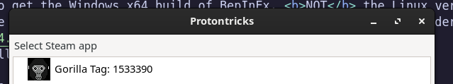
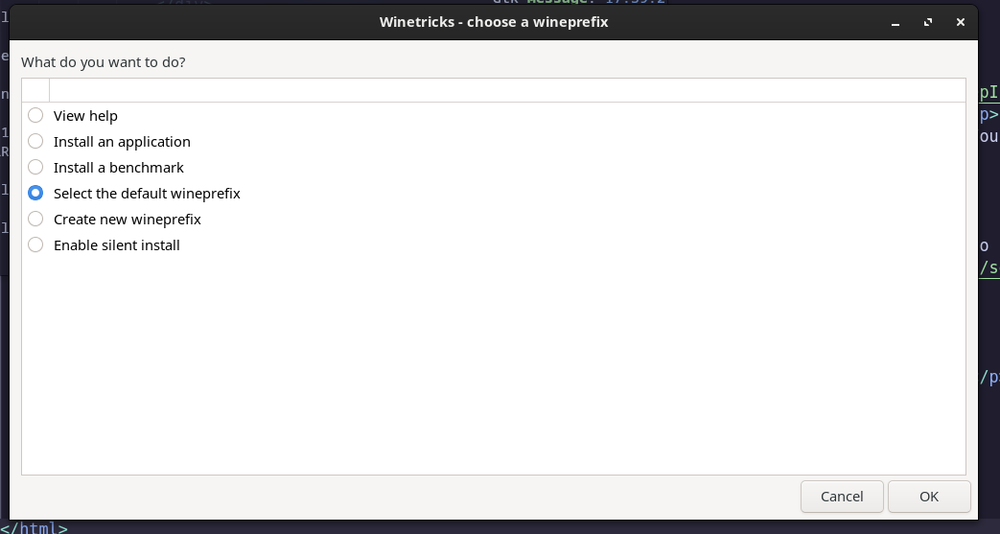
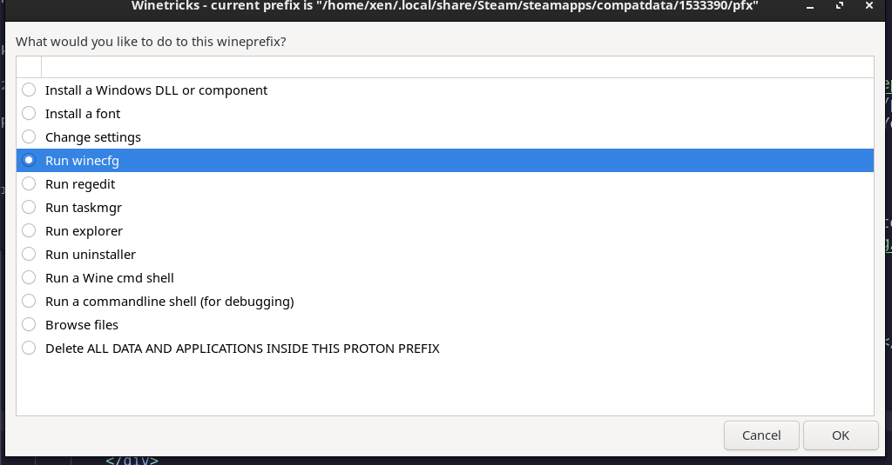
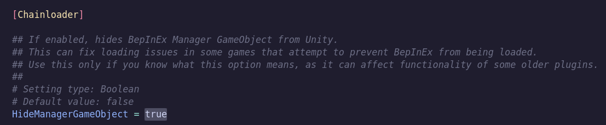

# Welcome to the Gorilla Tag Linux Modding Guide! #
This guide aims to get you up and running with Gorilla Tag mods, but on linux.
This guide will:
* Get you up and running with Gorilla Tag mods on Linux
This guide will NOT:
* Help you get up and running with VR on linux
In other words, this guide will only help you mod Gorilla Tag
If you want a guide on Linux VR, check out the LVRA Wiki
This guide assumes that you have Steam, and SteamVR installed, and that youre logged in.
* Hover over an image to expand it.
# 1. A disclaimer
This guide will only cover the process of modding the Steam version of Gorilla Tag.
The Oculus app, and by extension, the Oculus PCVR version of gtag, Isnt supported on Linux.
# 2. Enable proton
Valve runs a fork of wine called Proton. It is requited to play Gorilla Tag on Linux,
as Gorilla Tag dosen't have a native Linux build.
To enable Proton, go to 'Steam > Settings > Compatibility' then make sure 'Enable Steam Play for all other Titles' is enabled.
After this, Install Gorilla Tag, launch it once, and then close it.
# 3. Install BepInEx
Once you've installed Gorilla Tag, you can grab the latest version of BepInEx 5
Make sure to get the Windows x64 build of BepInEx, NOT the Linux version.
Extract the .zip file, then drop the contents into your Gorilla Tag folder.
Your Gorilla tag folder should look like this:
# 4. Install Protontricks
To make sure BepInEx loads, You'll need to install Protontricks.
The recommended way to install Protontricks is from the Flatpak.
You'll need to set up your Distro for flatpak, if it isnt already.
If the below command fails, you'll need to follow the Setup guide for your Distro.
If your distro is set up for Flatpak, run this command in your terminal:
flatpak install flathub com.github.Matoking.protontricks
# 5. Run Protontricks
You'll need to run Protontricks now. To do so, Run this command in your terminal:
flatpak run com.github.Matoking.protontricks --gui
Pick Gorilla Tag from the list that appears, then click OK.
From the list, select 'Select the default wineprefix', then click OK
From this list, select 'run winecfg', then click OK
In the dialog that appears, go to the "Libraries" tab, under 'New override for library',
type 'winhttp' (without quotes, all lowercase), click 'Add', then click 'OK'
After that, close off all protontricks windows.
# 6. Post-install
After you're done with protontricks, launch Gorilla Tag once, then close it.
open your Gorilla Tag folder, then go into 'BepInEx > Config > BepInEx.cfg'
Under '[Chainloader]', set 'HideManagerGameObject' to 'true'
Save the file. and then you're done!
# 7. Troubleshooting
# Protontricks throws an error when attempting to launch it!
* Make sure that flatpak is set up, or launch the game once, then close it.